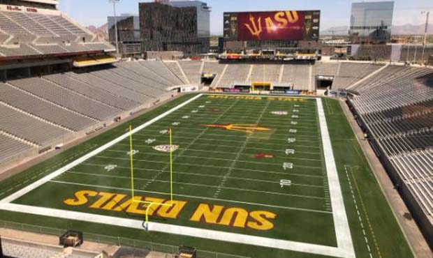
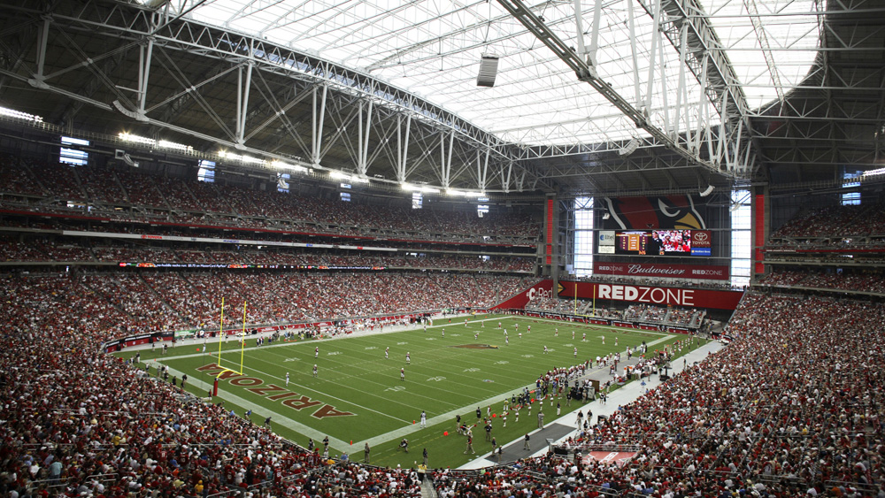

The Cardinals first started out as the Chicago Cardinals, where they won two championships in 1925, and 1947 before the merger. They moved to St. Louis in 1960 and stayed there for 27 years before moving to Arizona, where they played in Sun Devil Stadium because there wasn't enough money for them to build their own stadium. Eventually, State Farm Stadium was built in 2006 and they have played there ever since.
Above is a picture of Sun Devil Stadium. While they played here, it was difficult to sell out the stadium due to the small market.
Above is StateFarm Stadium, where the Cardinals currently play. The team's market has grown exponentially since their days at Sun Devil Stadium, and the Cardinals now have a big home advantage due to the number of fans that come to their home games.